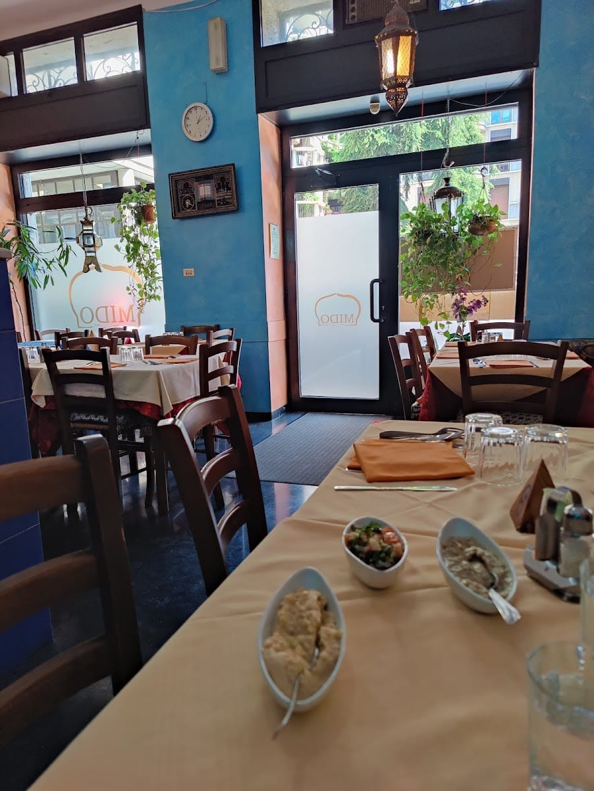

1990 — Via Pietro Custodi
Raafat, Maha e una cucina portata da casa
Raafat è arrivato a Milano da Alessandria d'Egitto con una laurea in economia — e ha aperto quello che in molti chiamano ancora oggi il primo ristorante arabo della città. Dal 1990 la famiglia Nassar accoglie in una vietta stretta del Ticinese, a due passi dal vecchio deposito dei tram.
«Vera cucina araba — non una sua versione occidentale.»
Raafat è l'anfitrione: ti fa accomodare, racconta e ti guida tra le portate con occhio sicuro. Sua moglie Maha custodisce la cucina e i segreti delle ricette più buone. Le pareti grezze dai colori accesi, le tovaglie rosse e le lampade sospese fanno il resto.
Dal 1990
Famiglia Nassar
Egiziana e mediorientale
Halal · veg · vegano · gluten-free